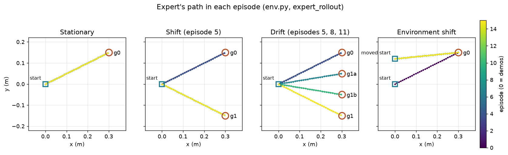

Step 1 · env.py
The task, the expert, and how the expert changes
Before any learning, we need a small world: a robot hand holding a cup, a goal, and an expert who always knows the right move. Then we make the expert change its goal over time, which is what the paper is about.
1
The task
Move a cup from a fixed start to the expert's goal, keeping the gripper closed.
This is the paper's simulated task. It is deliberately simple: a point moving in 3D space plus a gripper that is either closed (1) or open (0). There is no physics engine; the next position is simply the action the robot chooses. That keeps attention on the learning and asking, not on control.
Each run lasts up to 100 time steps. It ends early when the cup is within 0.01 of the goal.
The paper does not list the exact coordinates of the start and goals. I chose the values below (units are metres, the cup moves at the same height z = 0.10). Only their layout matters: two goals on opposite sides, and two in-between goals for the drift setting.
| Point | x | y | z | Used in |
|---|---|---|---|---|
| Start | 0.00 | 0.00 | 0.10 | all settings |
| Moved start | 0.00 | 0.12 | 0.10 | environment shift |
| Goal g0 (left) | 0.30 | 0.15 | 0.10 | the original goal |
| Goal g1a | 0.30 | 0.05 | 0.10 | drift, episodes 5–7 |
| Goal g1b | 0.30 | −0.05 | 0.10 | drift, episodes 8–10 |
| Goal g1 (right) | 0.30 | −0.15 | 0.10 | shift and drift, the final goal |
2
What the robot sees and does
It sees its last 3 positions (12 numbers) and outputs its next position (4 numbers).
Input x: 12 numbers
For each of the last 3 time steps: x, y, z and gripper (1 = closed).
step t−2: 0.000 0.000 0.100 1 step t−1: 0.008 0.004 0.100 1 step t : 0.017 0.008 0.100 1
Why 3 steps? From positions alone the robot can't tell which way it is moving. Three steps give it its own velocity, so it can continue a motion smoothly.
Action a: 4 numbers
The next position and gripper state.
next: 0.026 0.013 0.100 1
At the start of a run, the "last 3 positions" are all the start point, so the robot has to begin moving from rest.
The world then simply moves the cup to that position. The new position becomes the newest of the 3 remembered steps.
3
The expert
A perfect teacher: it always moves straight toward its current goal, at most 0.01 per step.
direction = goal − position step = min(0.01, |direction|) expert action = position + step × direction / |direction| (gripper stays 1)
Worked example
The cup is at (0.10, 0.05, 0.10) and the goal is g0 = (0.30, 0.15, 0.10).
direction = (0.30−0.10, 0.15−0.05, 0) = (0.20, 0.10, 0)
|direction| = √(0.20² + 0.10²) = 0.2236
step = min(0.01, 0.2236) = 0.01
expert action = (0.10, 0.05, 0.10) + 0.01 × (0.894, 0.447, 0)
= (0.1089, 0.0545, 0.10, 1)
From the start to g0 is 0.335 away. The run ends once the cup is within 0.01 of the goal, so the expert needs 33 steps (checked in the code). The cap of 0.01 is what the paper calls ω.
In the paper, the expert is an oracle: it never makes mistakes. Real people are noisy; that is left out here on purpose, so that every error comes from the robot or from the expert changing goal.
4
Four ways the expert changes
Choose a setting and move through the 15 episodes. The line is where the expert wants the cup to go in that episode.
| Setting | What changes | What it tests |
|---|---|---|
| Stationary | Nothing; the goal stays g0. | A good method should ask less and less as it learns. |
| Shift | g0 → g1 suddenly at episode 5. | Does the robot notice quickly and ask more? |
| Drift | g0 → g1a (ep 5) → g1b (ep 8) → g1 (ep 11). | Can it notice several small changes, not just one big one? |
| Environment shift | The start position moves from episode 1; the goal does not change. | A change in the world, not in the expert. Here asking more is not really needed. |
Episode 0 is the demonstration data before deployment (always start → g0). Each episode has 2 runs.
5
Checks: done (17 Nov 2026)
env.py is written and test_env.py passes all 15 checks.
| Check | Result |
|---|---|
| Expert reaches each goal, never more than 0.01 per step | ✓ g0 and g1: 33 steps; g1a and g1b: 30 steps; longest step 0.0100 |
| Observation has 12 numbers; starts as the start point ×3; newest state last | ✓ |
| Goal in each episode matches the table, for all 4 settings | ✓ |
| Environment shift: start moves from episode 1 | ✓ |
| Run stops at 100 steps (a robot that never moves) or at the goal | ✓ stopped at t = 100; expert ends 0.0054 from g0 |
| The worked example above | ✓ (0.1089, 0.0545, 0.1000, 1) |

plot_step1.py from the real code: the expert's path in every episode (colour = episode). This matches the demo above.